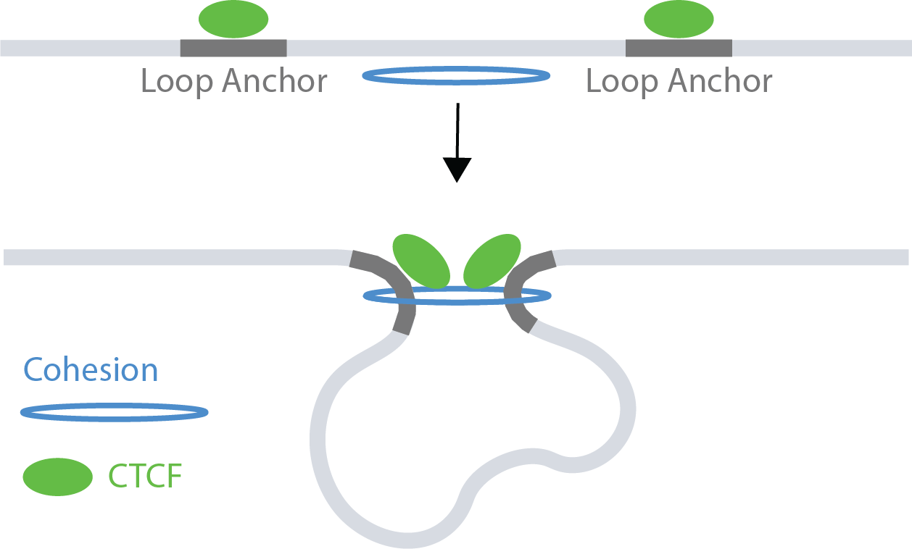
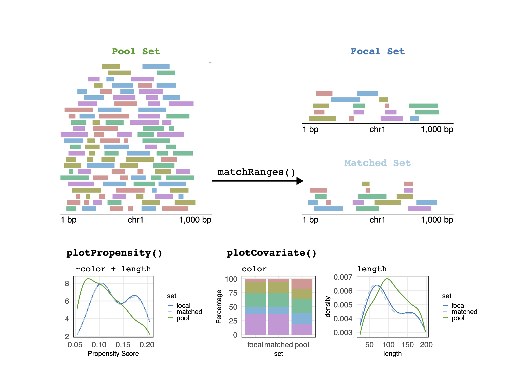
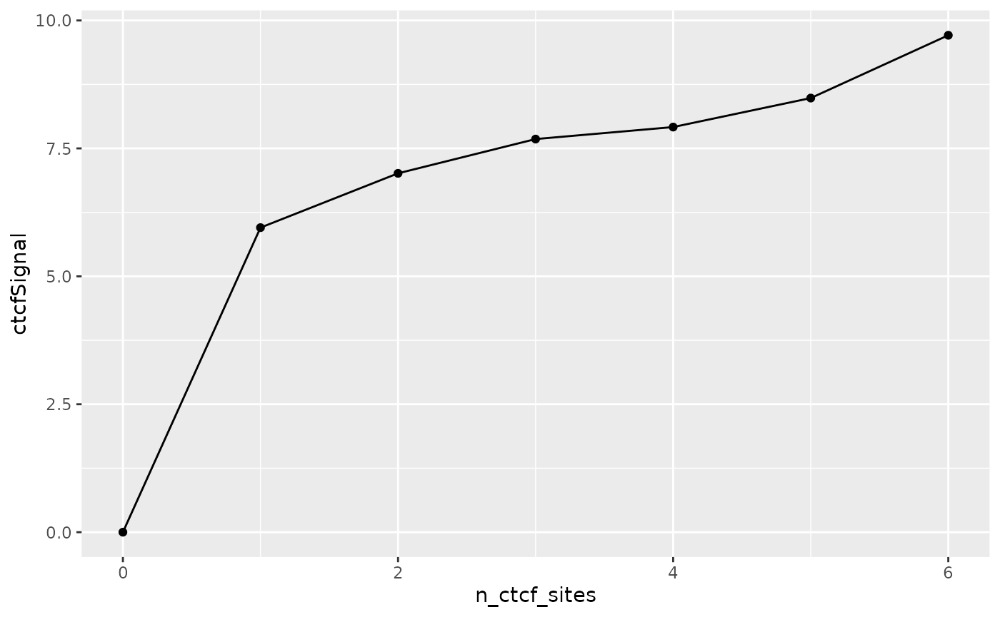
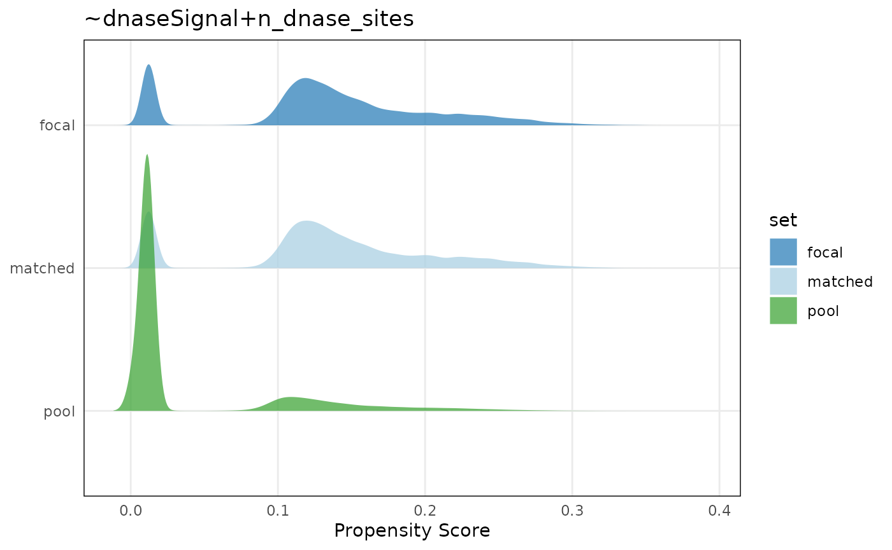
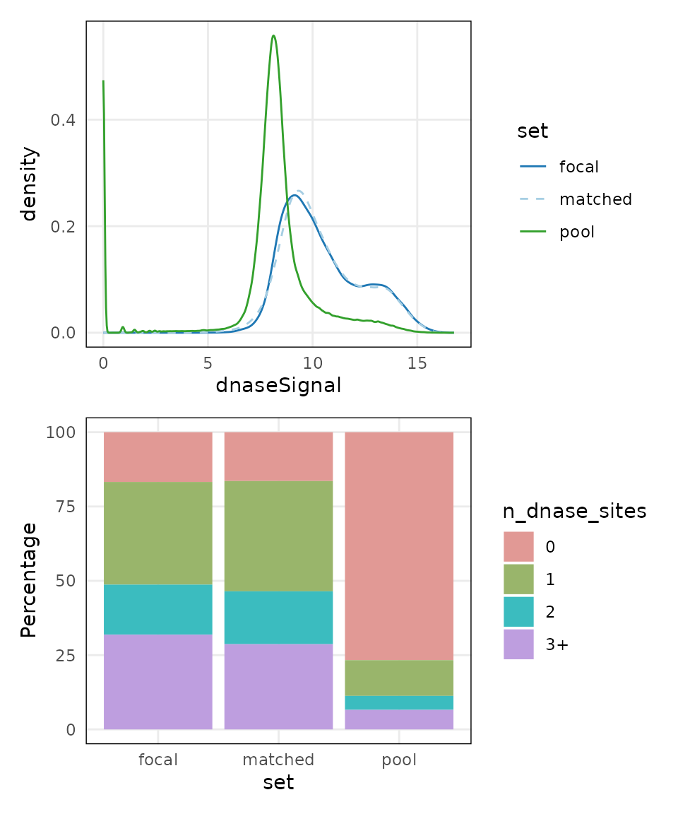
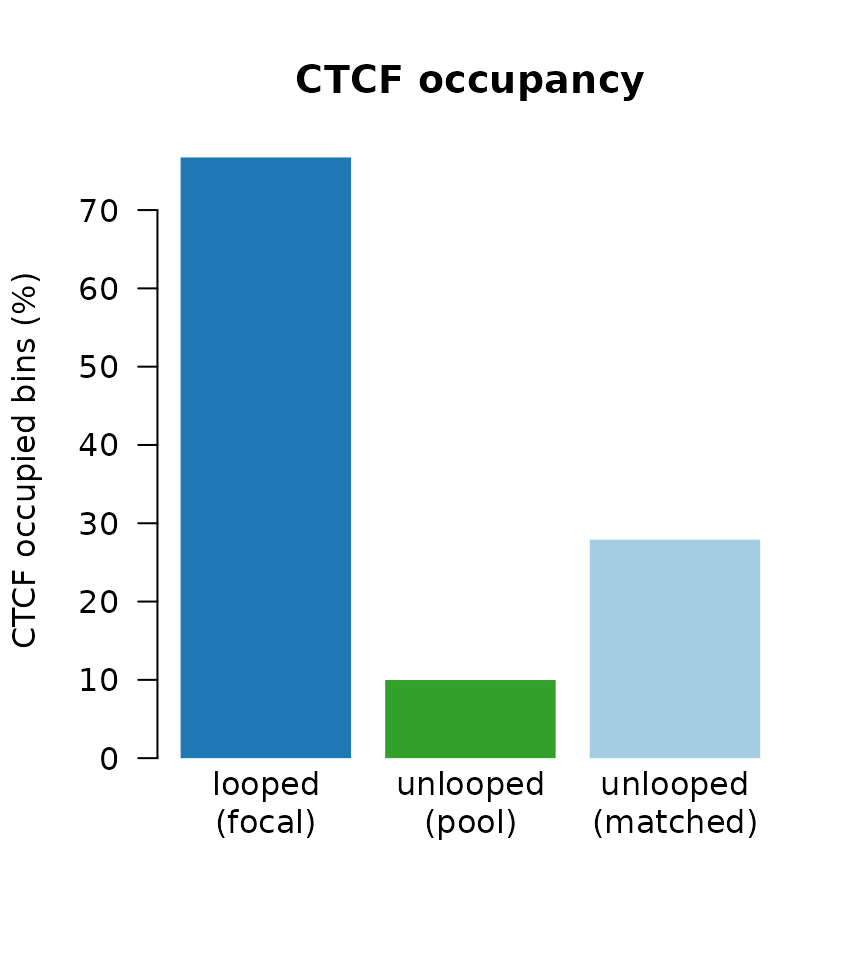

nullranges.RmdThe nullranges package contains functions for generation of feature sets (genomic regions) for exploring the null hypothesis of overlap or colocalization of two observed feature sets. The package has two approaches for generating null feature sets, matching and bootstrapping:
Matched subsampling with matchRanges:
Subsampling from a pool of features, but controlling for certain characteristics.
Bootstrapping with bootRanges:
In this workshop, we will demonstrate the two major approaches for
generating null hypothesis genomic ranges with the
nullranges package.
Suppose we want to examine the significance of overlaps of genomic sets of features \(x\) and \(y\). To test the significance of this overlap, we calculate the overlap expected under the null by generating a null feature set \(y'\) (potentially many times). The null features in \(y'\) may be characterized by:
For general considerations of generation of null feature sets or segmentation for enrichment or colocalization analysis, consider the papers of De, Pedersen, and Kechris (2014), Haiminen, Mannila, and Terzi (2007), Huen and Russell (2010), and Kanduri et al. (2019) (with links in references below). Other Bioconductor packages that offer randomization techniques for enrichment analysis include: MatchIt LOLA (Sheffield and Bock 2016) and regioneR (Gel et al. 2016). Methods implemented outside of Bioconductor include GAT (Heger et al. 2013), GSC (Bickel et al. 2010), GREAT (McLean et al. 2010), GenometriCorr (Favorov et al. 2012), or ChIP-Enrich (Welch et al. 2014). We note that our block bootstrapping approach closely follows that of GSC, while offering additional features/visualizations, and is re-implemented within R/Bioconductor with efficient vectorized code for operation on GRanges objects (Lawrence 2013).
An example for a 45-minute workshop:
| Activity | Time |
|---|---|
| Intro to nullranges | 5m |
| Matching with matchRanges | 15m |
| Bootstrapping with bootRanges | 15m |
| Q&A | 10m |
The following content is an excerpt from the vignette Case study I: CTCF occupancy from the nullranges package.
In this vignette we demonstrate generating covariate-matched,
null-hypothesis GRanges using the matchRanges() function to
test for the occupancy of CCCTC-binding factor (CTCF) at chromatin loop
anchors.
One of the fundamental principles of chromatin-looping suggests that most loops are bound at both ends by the CTCF transcription factor (TF). CTCF-bound loops can be formed by loop-extrusion, where the ring-like cohesin complex extrudes chromatin until stopped by bound CTCF. By this mechanism, we expect most loop anchors will be bound by CTCF.

While we could test this hypothesis by simple overlap or permutation
testing, these approaches fail to account for non-uniformly distributed
covariate genomic features. For example, loop anchors are commonly bound
by CTCF and located in open chromatin regions. We can use
matchRanges() to test for CTCF occupancy at loop anchors
controlling for open chromatin regions.
Here, we generate a set of null-hypothesis GRanges to more rigorously
test CTCF occupancy at loop anchors independently from open chromatin
regions. We use the hg19_10kb_bins dataset from the
nullrangesData package, which contains ranges for every
10Kb bin along the genome with CTCF, DNase, and loop feature annotations
from GM12878 (see ?nullrangesData::hg19_10kb_bins).

matchRanges()
Before we generate our null ranges, let’s take a look at our example dataset:
library(nullrangesData)
## Load example data
bins <- hg19_10kb_bins()
bins
#> GRanges object with 303641 ranges and 5 metadata columns:
#> seqnames ranges strand | n_ctcf_sites ctcfSignal
#> <Rle> <IRanges> <Rle> | <numeric> <numeric>
#> [1] chr1 1-10000 * | 0 0
#> [2] chr1 10001-20000 * | 0 0
#> [3] chr1 20001-30000 * | 0 0
#> [4] chr1 30001-40000 * | 0 0
#> [5] chr1 40001-50000 * | 0 0
#> ... ... ... ... . ... ...
#> [303637] chrX 155230001-155240000 * | 0 0.00000
#> [303638] chrX 155240001-155250000 * | 0 0.00000
#> [303639] chrX 155250001-155260000 * | 1 4.09522
#> [303640] chrX 155260001-155270000 * | 0 0.00000
#> [303641] chrX 155270001-155270560 * | 0 0.00000
#> n_dnase_sites dnaseSignal looped
#> <factor> <numeric> <logical>
#> [1] 0 0.00000 FALSE
#> [2] 0 5.03572 FALSE
#> [3] 0 0.00000 FALSE
#> [4] 0 0.00000 FALSE
#> [5] 0 0.00000 FALSE
#> ... ... ... ...
#> [303637] 0 8.42068 FALSE
#> [303638] 0 4.08961 FALSE
#> [303639] 0 6.00443 FALSE
#> [303640] 0 8.07179 FALSE
#> [303641] 0 0.00000 FALSE
#> -------
#> seqinfo: 23 sequences from hg19 genomematchRanges() works by selecting a set of
covariate-matched controls from a pool of options based on an input
focal set of interest. Here, we define focal as bins that
contain a loop anchor, pool as bins that don’t contain a
loop anchor, and covar as DNase signal and number of DNase
sites per bin:
library(nullranges)
## Match ranges
set.seed(123)
mgr <- matchRanges(focal = bins[bins$looped],
pool = bins[!bins$looped],
covar = ~dnaseSignal + n_dnase_sites)
mgr
#> MatchedGRanges object with 13979 ranges and 5 metadata columns:
#> seqnames ranges strand | n_ctcf_sites ctcfSignal
#> <Rle> <IRanges> <Rle> | <numeric> <numeric>
#> [1] chr8 16360001-16370000 * | 0 0.00000
#> [2] chr1 212260001-212270000 * | 0 0.00000
#> [3] chrX 9570001-9580000 * | 0 0.00000
#> [4] chr9 96840001-96850000 * | 0 0.00000
#> [5] chr16 31480001-31490000 * | 1 4.82341
#> ... ... ... ... . ... ...
#> [13975] chr12 105060001-105070000 * | 1 4.29979
#> [13976] chr4 103530001-103540000 * | 1 5.67681
#> [13977] chr14 65860001-65870000 * | 0 0.00000
#> [13978] chr2 96940001-96950000 * | 0 0.00000
#> [13979] chr19 38910001-38920000 * | 0 0.00000
#> n_dnase_sites dnaseSignal looped
#> <factor> <numeric> <logical>
#> [1] 0 7.40552 FALSE
#> [2] 1 9.72456 FALSE
#> [3] 3+ 10.87185 FALSE
#> [4] 1 8.86143 FALSE
#> [5] 3+ 10.65095 FALSE
#> ... ... ... ...
#> [13975] 3+ 13.90788 FALSE
#> [13976] 1 9.89450 FALSE
#> [13977] 1 9.83681 FALSE
#> [13978] 0 9.66206 FALSE
#> [13979] 2 12.13214 FALSE
#> -------
#> seqinfo: 23 sequences from hg19 genomeWhen the focal and pool arguments are GRanges objects,
matchRanges() returns a MatchedGRanges object.
The MatchedGRanges class extends GRanges, so
all of the same operations can be applied:
library(GenomicRanges)
library(plyranges)
library(ggplot2)
## Summarize ctcfSignal by n_ctcf_sites
mgr %>%
group_by(n_ctcf_sites) %>%
summarize(ctcfSignal = mean(ctcfSignal)) %>%
as.data.frame() %>%
ggplot(aes(x = n_ctcf_sites, y = ctcfSignal)) +
geom_line() +
geom_point()
Here, we utilize the plyranges
package which provides a set of “tidy” verbs for manipulating
genomic ranges for a seamless and integrated genomic analysis
workflow.
We can get a quick summary of the matching quality with
overview():
overview(mgr)
#> MatchedGRanges object:
#> set N dnaseSignal.mean dnaseSignal.sd n_dnase_sites.0
#> focal 13979 10.0 1.9 2341
#> matched 13979 10.0 1.9 2297
#> pool 289662 7.9 2.7 222164
#> unmatched 275683 7.8 2.7 219867
#> n_dnase_sites.1 n_dnase_sites.2 n_dnase_sites.3+ ps.mean ps.sd
#> 4829 2353 4456 0.130 0.072
#> 5187 2487 4008 0.130 0.071
#> 34826 13627 19045 0.042 0.061
#> 29639 11140 15037 0.037 0.057
#> --------
#> focal - matched:
#> dnaseSignal.mean dnaseSignal.sd n_dnase_sites.0 n_dnase_sites.1
#> 0.037 -0.0061 44 -360
#> n_dnase_sites.2 n_dnase_sites.3+ ps.mean ps.sd
#> -130 450 0.00025 0.00081For continuous covariates (such as dnaseSignal),
overview() shows the mean and standard deviation between
each matched set. For categorical covariates, such as
n_dnase_sites, overview() reports the number
of observations per category and matched set. The bottom section shows
the mean and s.d (or n, for factors) difference between focal and
matched sets.
overview() also summarizes the propensity scores for
each set to give a quick idea of overall matching quality.
Let’s visualize overall matching quality by plotting propensity scores for the focal, pool, and matched sets:
plotPropensity(mgr, sets = c('f', 'p', 'm'), type = 'ridges')
From this plot, it is clear that the matched set is much closer to the focal set than the pool set.
We can ensure that covariate distributions have been matched
appropriately by using the covariates() function to extract
matched covariates along with patchwork and
plotCovarite to visualize all distributions:
library(patchwork)
plots <- lapply(covariates(mgr), plotCovariate, x=mgr, sets = c('f', 'm', 'p'))
Reduce('/', plots)
Using our matched ranges, we can compare CTCF occupancy in bins that
1) contain a loop anchor (i.e. looped), 2) don’t contain a loop anchor
(i.e. unlooped), or 3) don’t contain a loop anchor, but are also matched
for the strength and number of DNase sites (i.e. matched). In this case,
we calculate CTCF occupancy as the percent of bins that contain CTCF
among our 3 sets by using the focal() and
pool() accessor functions:
## Percent of bins with CTCF
g1 <- (sum(focal(mgr)$n_ctcf_sites >= 1) / length(focal(mgr))) * 100
g2 <- (sum(pool(mgr)$n_ctcf_sites >= 1) / length(pool(mgr))) * 100
g3 <- (sum(mgr$n_ctcf_sites >= 1) / length(mgr)) * 100
## Visualize
barplot(height = c(g1, g2, g3),
names = c('looped\n(focal)', 'unlooped\n(pool)', 'unlooped\n(matched)'),
ylab = "CTCF occupied bins (%)",
col = c('#1F78B4', '#33A02C', '#A6CEE3'),
main = 'CTCF occupancy',
border = NA,
las = 1)